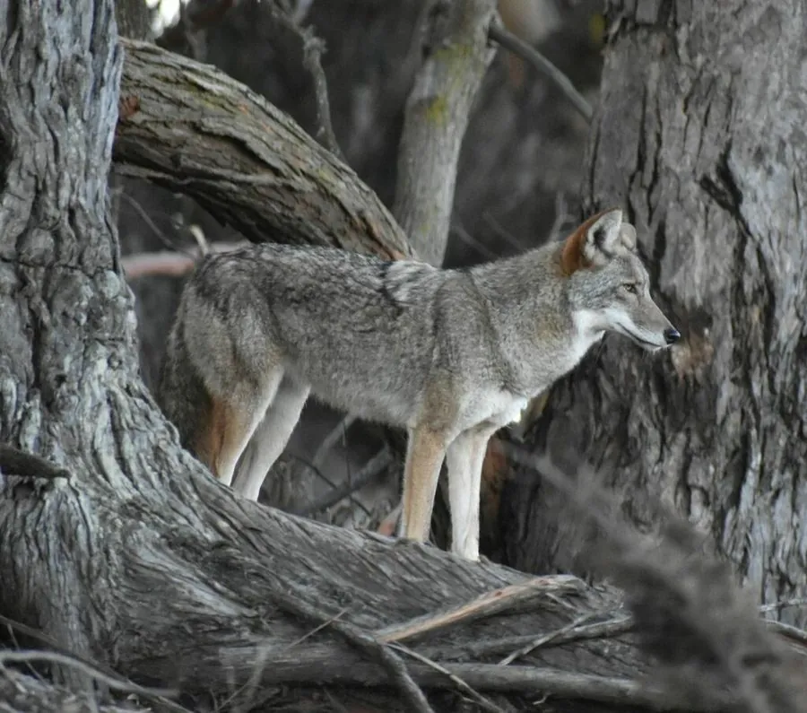

哺乳动物 · 动物界
郊狼 Canis latrans

北美洲广泛分布的犬科动物，适应力极强，从草原、荒漠到城市郊区都能生存，叫声多变，常被称为草原之犬。
- 分类
- 门脊索动物门纲哺乳纲目食肉目科犬科属犬属
- 栖息环境
- 草原、荒漠、森林、农田与城市边缘，适应多种环境
- 地理分布
- 北美洲，从阿拉斯加、加拿大到中美洲，分布范围仍在扩大
- 保护级别
- IUCN 无危（LC）
物种志
郊狼体长 0.75–1.0 米，尾长 0.3–0.4 米，体重 7–20 kg，雄性略大。它的被毛为灰褐至黄褐色，背部毛色较深，喉部、腹部和口鼻周围偏白，尾毛蓬松、末端黑色；耳朵直立，吻部细长，体形比狼小而比赤狐大。
郊狼分布于北美洲，从阿拉斯加、加拿大到中美洲，栖息于草原、荒漠、森林、农田和城市边缘，适应力极强。它是机会主义捕食者，食谱包括野兔、鼠类、鹿崽、鸟类、昆虫、果实，甚至人类丢弃的食物和宠物。郊狼多以家庭群或成对活动，叫声包括嚎叫、吠叫和尖叫，用于联络与宣示领地。雌兽妊娠期约 60–63 天，每胎 4–7 仔。由于狼群减少和城市扩张，郊狼分布范围反而扩大，并会与狼、家犬杂交。
形态与习性
- 食性野兔、鼠类、鹿崽、鸟类、昆虫与果实，机会主义取食
- 体长0.75–1.0 m，尾长 0.3–0.4 m
- 体重7–20 kg，雄性略大
- 寿命野外约 6–10 年
- 繁殖妊娠期约 60–63 天，每胎 4–7 仔
- 叫声嚎叫、吠叫与尖叫结合，用于联络同伴
- 适应从荒野到城市郊区都能生存
趣味知识
- 郊狼的分布范围随狼群减少和城市扩张而不断扩大。
- 它会与狼或家犬杂交，产生体型更大的“郊狼狼”。
- 郊狼的叫声包括嚎叫、吠叫和尖叫，音调变化丰富。
- 在北美城市郊区，郊狼常在夜间翻找垃圾桶觅食。